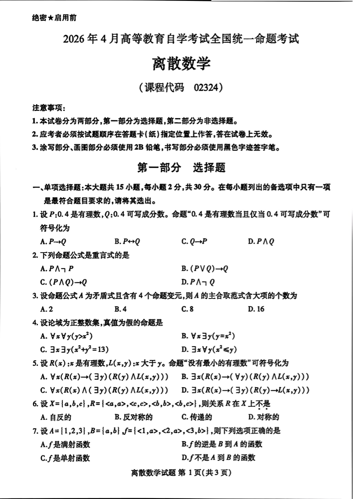
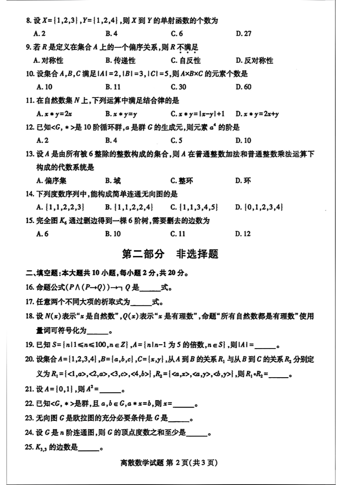
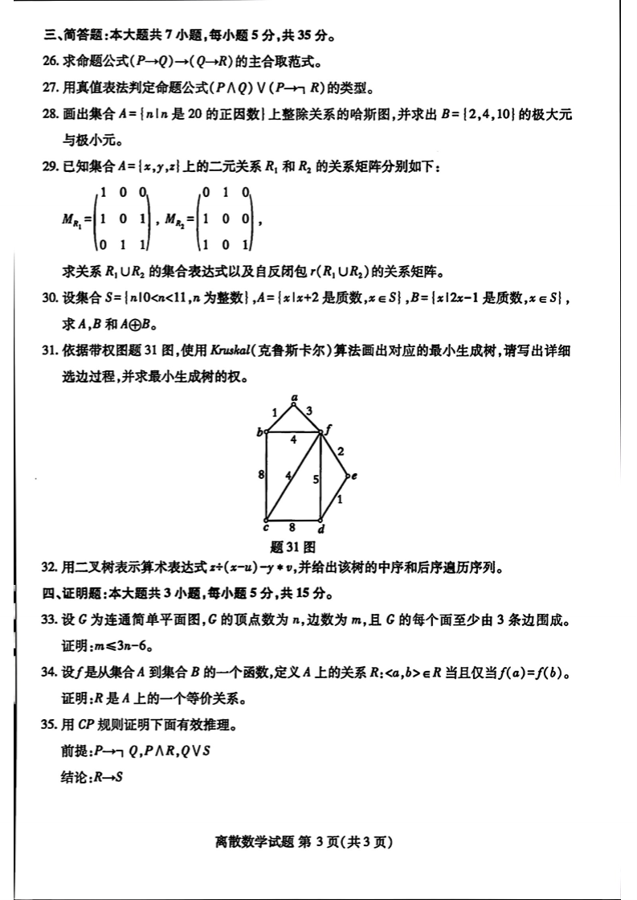

这是试卷的原始扫描件，供直接对照阅读、自测。点击任意一页可放大查看，放大后支持双指 / 滚轮缩放、拖动平移、双击放大，看清 A4 密排文字；需要纸质手感可点右上角"打印 / 存 PDF"（每页自动分页）。做完后点"查看详解"核对答案与解析。
第 1 页第一部分 选择题 · 单选 1–7 题

第 2 页单选 8–15 题 · 第二部分 填空题 16–25 题

第 3 页第三部分 简答题 26–32 题 · 第四部分 证明题 33–35 题
